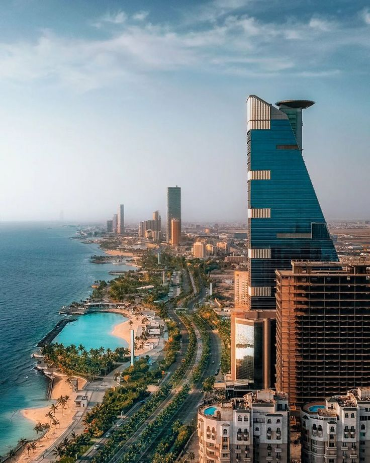

My Favorite Cities
Jeddah, Saudi Arabia
Known as the gateway to Makkah, Jeddah is a bustling port city with a vibrant mix of modernity and tradition. Famous for its Corniche, historic Al-Balad district, and stunning Red Sea views.

Makkah, Saudi Arabia
The holiest city in Islam, Makkah is the birthplace of the Prophet Muhammad (PBUH). It is home to the sacred Kaaba in Masjid Al-Haram, attracting millions of pilgrims every year.

Madina, Saudi Arabia
The second holiest city in Islam, Madina is renowned for Masjid-e-Nabawi, the Prophet's Mosque. A city of peace, it holds immense spiritual and historical significance for Muslims.